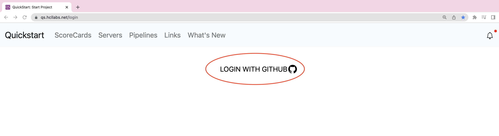
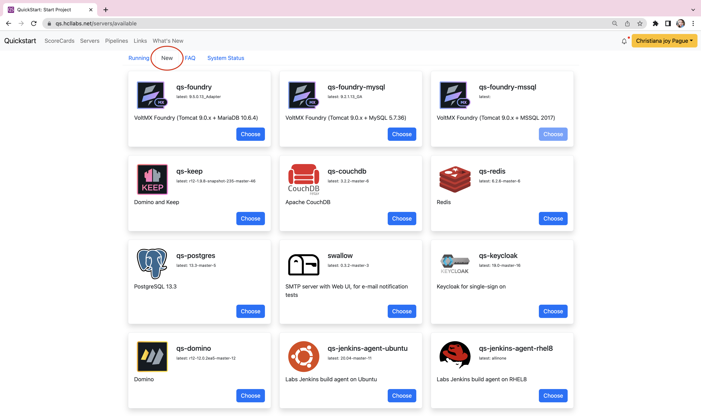
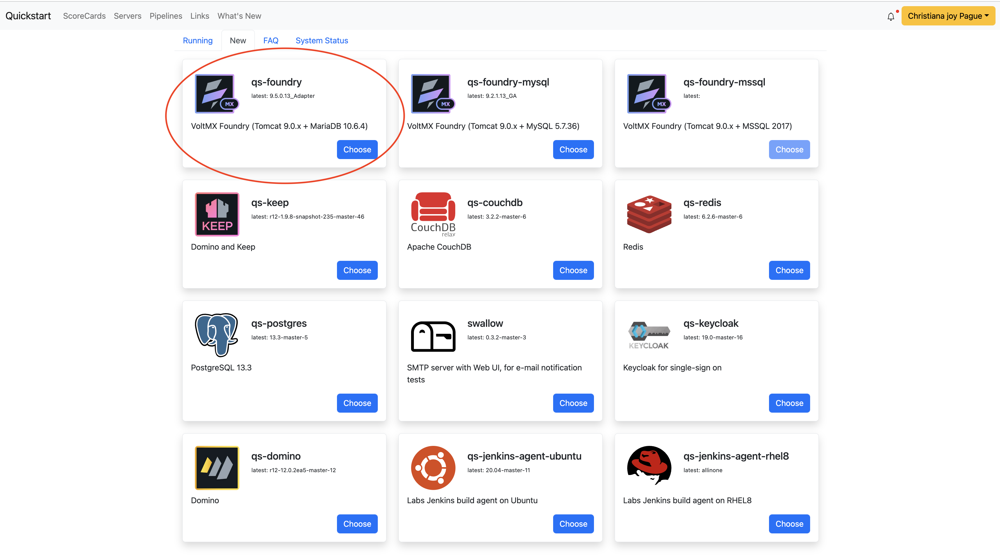
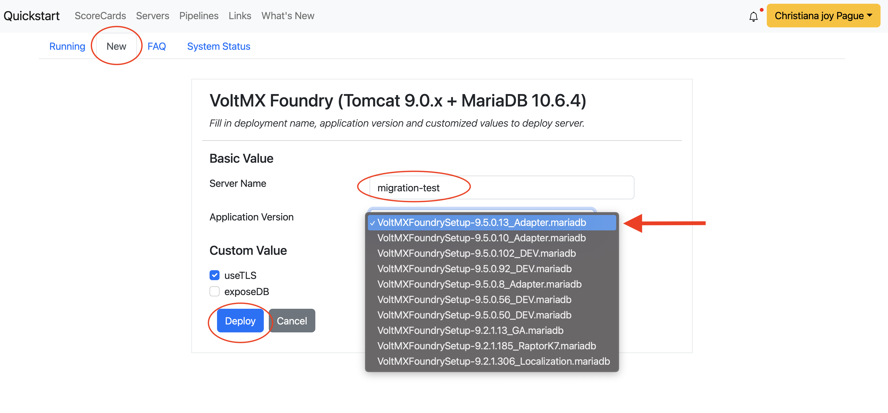
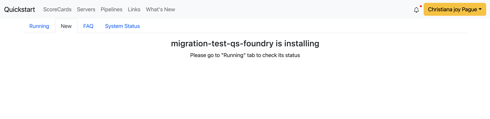
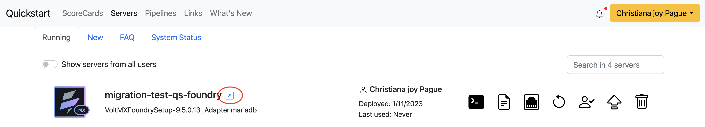
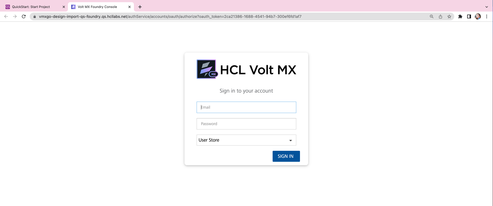
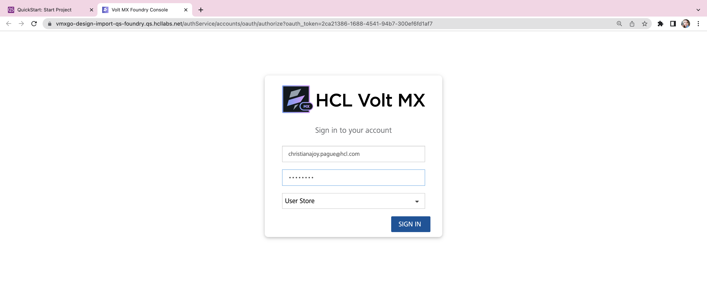
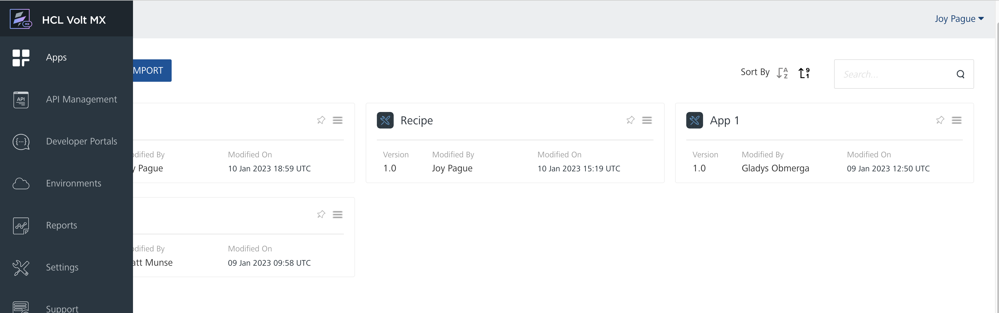
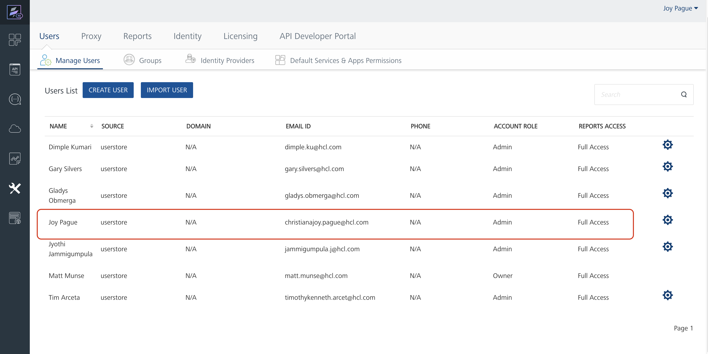

Foundry
How to create a foundry server instance
-
Login to Quickstart
- Click Login with Github
https://www.qs.hcllabs.net/login

- Click Login with Github
-
You will see all the running servers

-
To create a new server, select New then choose the server instance you wish to create. 
-
For this example, I will select qs-foundry server 
-
Fill out the necessary fields:
- Server Name
- Latest Application Version
- Custom Value to default value 
- Next screen will show you this: 
- You may go back to the Running tab to see the status of your new qs foundry instance
- select the blue arrow icon to start up the application 
-
Existing Foundry Server
-
If you are to access an existing server, click the blue arrow icon to start up the foundry console

-
You are to provide your credentials to be able to login. 
- Example: 
-
Foundry Console Dashboard 
-
Make sure you have an access to the foundry console. See example of list of users below 
-
If you are not an existing user, contact your admin/team lead to give you access to the foundry console.